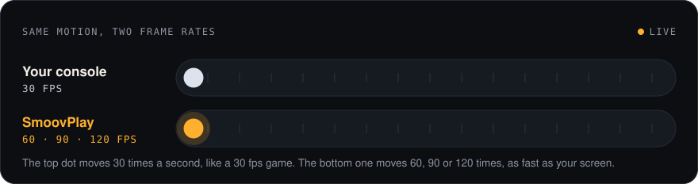
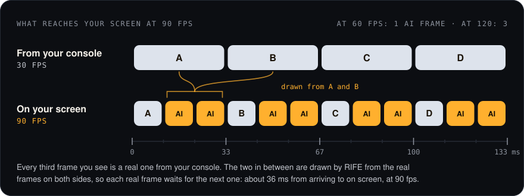

From your console to 60, 90 or up to 120 fps
Your console streams to your PC over your home network. On the way to your screen, your graphics card draws new frames between the ones the game sends, and scales the picture to fit.

Six steps, a few milliseconds each
With a PS5, the tested setup, the console and the PC talk the way Sony's Remote Play app does. With an Xbox app window or a capture card (Experimental), the frames come from the captured window or the card instead, and the rest is the same.
- Console
It streams the game
A PS5 sends Remote Play over Ethernet or 5 GHz Wi-Fi. Nothing is installed on it.
1080p - PC · processor
chiaki-ng receives it
The open-source Remote Play app plays the sound and sends your buttons back. Its frame tap hands each frame to SmoovPlay.
Sound held back to stay in step - PC · graphics card
Decode, skip repeats
The video decoder unpacks each frame. Repeated frames and scene cuts are found, so they aren't blended.
30 new frames a second - PC · graphics card
Draw the in-betweens
RIFE 4.22 lite, through NVIDIA TensorRT, draws 1, 2 or 3 frames between each pair of real ones.
About 9 ms each - PC · graphics card
Sharpen and scale
AMD FSR 1 or NVIDIA RTX Video Super Resolution fits the 1080p picture to your monitor.
FSR 1 in 0.1 ms - Screen
Show every frame
Frames go out at your screen's refresh rate: 60, 90 or up to 120 a second.
One every 11.1 ms at 90 fps
![Desk setup. The PS5 connects by Ethernet to the router, which connects to the PC: the Remote Play stream comes in that way and button presses go back. The controller connects to the PC. The PC's DisplayPort output sends 90 or 120 frames a second to the screen. Inside the PC: the network port receives 30 new frames a second; chiaki-ng on the processor unpacks the stream, plays the sound and sends your buttons; on the graphics card (here an NVIDIA RTX card) the video decoder unpacks each frame and skips repeats, the AI cores draw two in-between frames, about 9 ms each, the shader cores scale the picture with AMD FSR 1 in 0.1 ms, and the display output sends a frame every 11.1 ms at 90 fps.](../assets/setup.svg)
Two AI frames for every real one
Each AI frame is drawn from the real frames on both sides of it. At 60 fps there's one between each pair of real ones, and at 120 fps three.

About 36 ms at 90 fps, and where it goes
SmoovPlay adds about 36 ms at 90 fps (about 20 ms at 60) on top of Remote Play's own delay. Motion gets smoother, but the game still responds like 30 fps, a little later than without it.
- Measure yoursPress L in the video window: SmoovPlay presses a button through chiaki-ng and times how long the PS5 takes to show it.
- Sound stays in stepchiaki-ng holds the sound back by as long as the picture spends in SmoovPlay.
- Lowest delayFullscreen (F) is quickest, and 60 fps adds the least.
Three steps, under half an hour, once
Install
Run
10 to 20 minutes · no admin rightsSmoovPlay-Setup.exe. It checks your PC, helps fix anything that's off, downloads the AI runtime from official sources and tunes itself to your graphics card.Connect your console
For a PS5, follow Connect your PS5 in the app: turn on Remote Play, sign in to PSN in chiaki-ng and register the console. For an Xbox or a capture card (Experimental), pick App window or Capture card on the Play page.
About 5 minutes, oncePlay
Press Play. In the video window, M opens every setting, live, and F goes fullscreen.
60, 90 or up to 120 fps
| You need | |
|---|---|
| PC | Windows 10 or 11 (64-bit), 8 GB of memory, 12 GB free during setup |
| Graphics card | NVIDIA GeForce RTX 30, 40 or 50 series. Experimental AMD Radeon and Intel Arc. |
| Console | A PS5 with Remote Play turned on. Experimental A console through a capture card, or a game streamed to an app on this PC. |
| Network | Ethernet for the console and the PC, or 5 GHz Wi-Fi (not needed with a capture card) |
| Screen | Any: 60 Hz gets 60 fps, 90 Hz gets 90, 120 Hz or faster gets up to 120. G-Sync or FreeSync helps. |
Windows says "Windows protected your PC"
SmoovPlay isn't code-signed yet, and Windows' SmartScreen warns about new programs that have no download history. So the first time, you get past two warnings:
- Your browser may say the file isn't commonly downloaded. Choose to keep it. In Edge: ⋯ → Keep → Show more → Keep anyway.
- Windows says "Windows protected your PC" when you run it. Click More info, then Run anyway.
Setup installs for your Windows user only, so it never asks for admin rights. To be sure you have the real file, download it only from SmoovPlay's Releases page and compare its SHA-256 with the one listed there (Get-FileHash .\SmoovPlay-Setup.exe in PowerShell). Updates from inside the app must carry SmoovPlay's signature before they run.
Keys in the video window
Settings apply as you play. Your controller plays the game; the keyboard runs SmoovPlay.
| M | Menu: every setting, live |
|---|---|
| F | Fullscreen, for the lowest delay |
| I | Frame generation off and on, to compare |
| R · B | Save the instant replay · a before & after video (Ctrl+Alt+R · Ctrl+Alt+B from any window) |
| K · J | Look off and on · next look (Shift+J goes back) |
| S · U | Stats overlay (off, minimal, detailed) · next upscaler |
| L | Delay test (PS5 Remote Play) |
| Esc or Q | Stop |
What to expect
- Smoother, not fasterGreat for driving, exploring and story missions; not for competitive online play.
- 1080pRemote Play arrives at 1080p, so the picture is a little softer than HDMI straight from the console.
- Some wobbleHUD text over fast motion, very fast camera turns and thin objects crossing can wobble a little. Press I to compare.
- 60 fps games pass throughThere are no gaps to fill. Try one anyway with Test with a 60 fps game on the Play page.
- Games between 40 and 60 fpsThey stutter over a 60 Hz stream. Even out 40-60 fps (Experimental, on by default) spaces their frames evenly, for about 17 ms more delay.
- One frame generator at a timeLeave NVIDIA Smooth Motion, AMD Fluid Motion Frames and Lossless Scaling off for SmoovPlay and chiaki-ng. Other games aren't affected.
Questions people ask
Is it really free?
Yes. SmoovPlay is free and open source under the MIT licence, with no account, ads or tracking. It only talks to GitHub, to check for new versions. The source is all on GitHub.
Does it change anything on my PS5?
No. Nothing is installed on the console. Your PC receives the Remote Play stream the way Sony's own Remote Play app does, through chiaki-ng, a free, unofficial Remote Play app. You sign in to PSN once in chiaki-ng to register the console, as you would in Sony's app.
Will games feel more responsive?
No. The extra frames are generated: motion gets smoother, but the game still responds like 30 fps, and a little later than without SmoovPlay. That's why it suits driving, exploring and story games more than competitive online play.
The picture stays black, or the PS5 says the content can't be shown
Turn off HDCP on the PS5: Settings → System → HDMI, turn off Enable HDCP, then connect again. Turn it back on for video apps like Netflix when you're done. Still black? Press Q, then Help → Copy diagnostics, and paste it into an issue.
Does it work with AMD or Intel graphics cards?
Yes, as an Experimental option, through DirectML on any DirectX 12 card; Radeon RX 6000, 7000 and 9000 and Intel Arc are the ones to try. It draws the same frames as the NVIDIA engine, about 1.7 times more slowly, so expect 60 fps, and 90 on a fast card. It hasn't met a game on a real AMD or Intel card yet: press Send feedback on the Help page after playing.
Does it work with Xbox, Switch or a capture card?
As Experimental options. For any console with HDMI, pick Capture card on the Play page. For Xbox, pick App window: SmoovPlay captures the window of the app you stream with (the Xbox app, Sony's PS Remote Play app, Moonlight or a cloud game in a browser) and shows the smooth picture over it. Neither has been tried with the real thing yet, so please send feedback.
How is this different from DLSS Frame Generation or Lossless Scaling?
DLSS Frame Generation is built for PC games: it uses the motion data the game engine provides. A video stream doesn't carry that, so SmoovPlay uses RIFE, which works out the motion from the frames themselves. Lossless Scaling is great and works on any window. SmoovPlay is free and open source, takes frames straight from chiaki-ng's decoder instead of capturing the screen, and walks you through connecting your console.
What about 60 fps games?
They pass through unchanged: there are no gaps to fill. To see what SmoovPlay does anyway, press Test with a 60 fps game on the Play page. It leaves out every other frame, so the game arrives like a 30 fps one, fills the gaps as usual, and scores each AI frame against the real frame it replaced.
What does setup download?
About 5 GB: Python, PyTorch and NVIDIA TensorRT, each from its official source. It costs nothing, and sends nothing about you.
How do updates work?
SmoovPlay checks GitHub for new versions itself and updates in one click. An update must carry SmoovPlay's signature before it runs.
What is NVIDIA VFG?
An optional second AI model for RTX 40 and 50 series cards: NVIDIA's own Video Frame Generation. It isn't part of SmoovPlay. Set up NVIDIA VFG on the Settings page downloads it from NVIDIA, only once you accept NVIDIA's licence.
Can another app send its frames to SmoovPlay?
Yes, as an Experimental option for developers: the frame tap, the shared memory chiaki-ng sends Remote Play's frames through, takes decoded frames from any app. Pick Frame tap on the Play page.
Was AI used to build it?
Yes. It was written with a lot of help from AI coding tools, which is part of why all of it is there to read. The heavy lifting is done by established open-source projects: chiaki-ng for Remote Play, RIFE for the in-between frames and AMD FSR 1 for scaling.
Something isn't working. Where do I report it?
In Issues on GitHub. In the app, Help → Copy diagnostics copies your PC and settings details: paste them in with the game and what happened. Reports from new graphics cards, games and setups help the most right now.
Your console, smoother on your PC
Free for Windows 10 and 11, with an NVIDIA RTX 30, 40 or 50 series card.